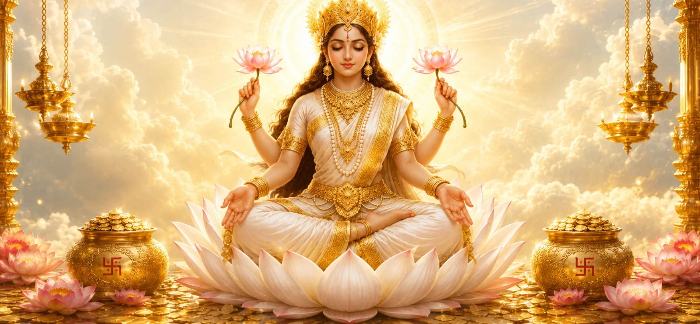

SHREE LAXMI PUJA MAHOTSAV
श्रद्धा, समृद्धि
र एकताको पवित्र उत्सव।
परम्परा, भक्ति, संस्कृति र सामुदायिक एकताको सुन्दर उत्सवमा हामीसँग जोडिनुहोस्।

परम्परा • श्रद्धा • सेवा
About Shree Laxmi Puja
श्री लक्ष्मी पूजा हाम्रो धार्मिक तथा सांस्कृतिक परम्परालाई सम्मान गर्दै समुदायलाई एउटै भावनामा जोड्ने पवित्र अवसर हो। यस महोत्सवले श्रद्धा, सेवा, संस्कृति र सहकार्यलाई केन्द्रमा राख्छ।
हाम्रो उद्देश्य पूजा परम्परालाई संरक्षण गर्दै परिवार, छिमेकी, युवा, ज्येष्ठ नागरिक र शुभेच्छुक सबैलाई सहभागी हुने खुला र आत्मीय वातावरण बनाउनु हो।
हाम्रो टोली
Our Committee
पूजा व्यवस्थापन, कार्यक्रम समन्वय र समुदाय सेवामा सक्रिय हाम्रो समिति।
आभार • सम्मान • कृतज्ञता
Our Donors
पूजा तथा महोत्सवलाई सहयोग गर्नुहुने सबै दाता तथा शुभेच्छुकप्रति हार्दिक आभार।
समय • विधि • उत्सव
Our Program
सात दिनलाई केन्द्रमा राखेर तयार गरिएको editable कार्यक्रम ढाँचा। अन्तिम मिति र समय समिति अनुसार परिवर्तन गर्न सकिन्छ।
सेवा • सहयोग • पारदर्शिता
पूजा सहयोग गर्नुहोस्
दान गरेपछि आफ्नो विवरण पठाउनुहोस्। आधिकारिक QR उपलब्ध भएपछि दायाँपट्टि राख्न सकिने गरी ठाउँ तयार गरिएको छ।
Scan & Support
आधिकारिक payment QR यहाँ राखिनेछ।
सम्झना • क्षण • इतिहास
Our Memories
पछिल्लो वर्षका पूजा तथा सामुदायिक कार्यक्रमका फोटोहरू यहाँ राखिनेछन्।
दृष्टि • योगदान • नेतृत्व
Our Founder
यस पूजा समितिको सुरुवात गर्ने संस्थापकको वास्तविक नाम, फोटो र विस्तृत इतिहास आधिकारिक विवरण प्राप्त भएपछि यहाँ राखिनेछ।
समुदायलाई एकताबद्ध गर्दै पूजा, संस्कृति र सेवा एउटै ठाउँमा जोड्ने सोचबाट समितिको यात्रा सुरु भएको कथा यहाँ प्रस्तुत गरिनेछ।
“श्रद्धा साझा हुँदा परम्परा अझ बलियो बन्छ, र समुदाय जोडिँदा उत्सव अझ अर्थपूर्ण हुन्छ।”
सम्पर्क • स्थान • सहभागिता
Find Us
पूजा, समिति वा सहयोगसम्बन्धी जानकारीका लागि हामीसँग सम्पर्क गर्नुहोस्।
[पूरा आधिकारिक ठेगाना]
[आधिकारिक सम्पर्क नम्बर]
[आधिकारिक इमेल]
आइतबार–शुक्रबार · 10 AM–6 PM